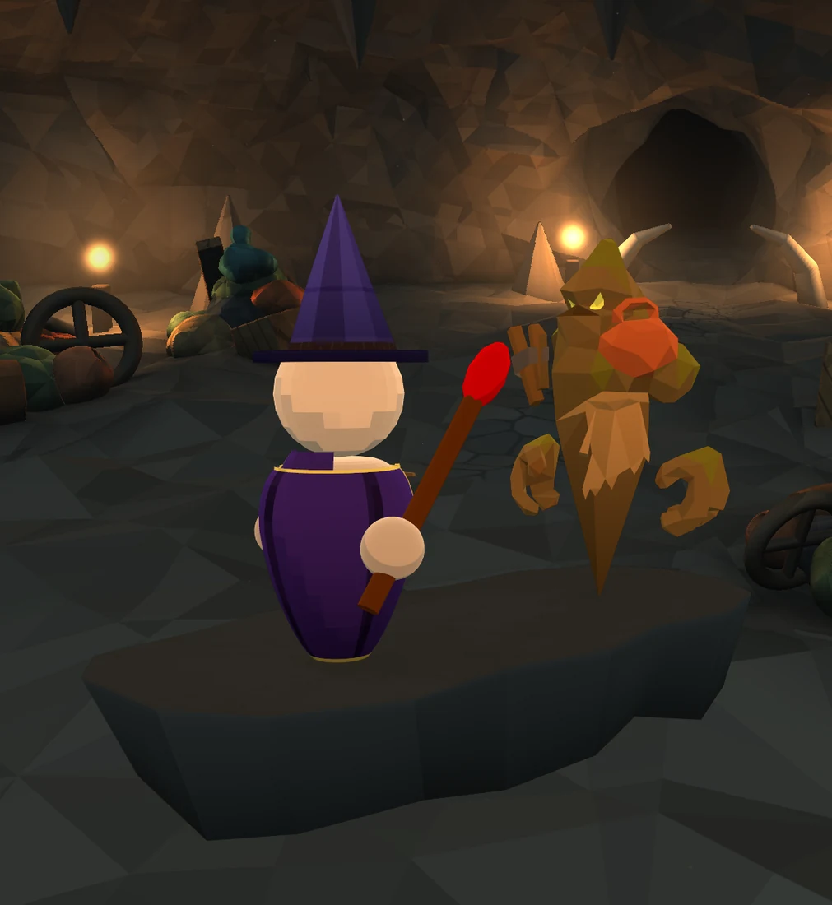

The Garbage Man's dungeon
The Garbage Man's dungeon: He throws a line of garbage every 3 seconds at wave 1, and every second by wave 10.
The Garbage Man's waves
He throws a line of garbage every 3 seconds at wave 1, and every second by wave 10.
He does no damage, but topping out ends the run.
Each time you beat him, your board wipes and he comes back stronger.
The Garbage Man's door
It costs 5 Scrap to go in.
Beat wave 10 for an Arcane Vault, then keep fighting for more.
Garbage Man throws garbage for 10 waves. The door costs 5  Scrap.
Scrap.
The game's own guide: Challenges.
Gallery


Strategy
Not written yet
How to get the most out of The Garbage Man's dungeon.